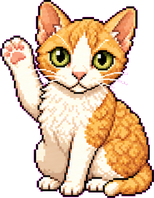
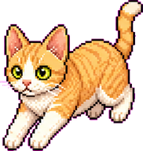
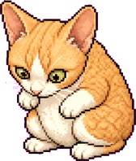
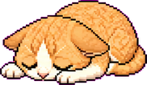

「周五」是一只常驻屏幕角落的橘色德文卷毛猫。点一下，它帮你翻译、修英文、点评口语；不点的时候，它就在桌面打盹。大脑跑在你自己 Mac 的本地小模型上——不联网、不花 API 钱、断网也能用。完全开源，clone 下来自己跑就行。

名字取自鲁滨逊的伙伴 Friday——意思是"会一直陪着你的小伙伴"。它不是冰冷的工具栏图标，是一只会眨眼、歪头、打鼾的小生物。



不用切窗口、不用打开浏览器。看到什么、想说什么，直接交给桌面右下角那只小猫。
粘进中文或英文，周五自动判断方向，按意思翻成像母语者写出来的句子——不逐字硬翻。
把你写的英文贴进去——邮件也好、推文也好。周五给你高亮改动、解释原因，再来一个更顺的版本。
点麦克风，对着周五说英文。说完它从文字层面点评语法和用词，再给你一个更自然的说法。
在卡片底部打开"划词翻译"，任何窗口里选中英文，周五会从角落里探出头来，告诉你这个词什么意思、什么词性、怎么用。
周五不调用任何云端 API。它通过本地的 oMLX 服务跑一个开源小模型——我们默认推荐 Qwen3.5-4B。装一次，之后所有翻译、点评都在你 Mac 上离线完成。
你输入的句子只在自己 Mac 上处理，不联网、不上传、不拿去训练，断网也照常用。
不用 OpenAI / Claude 的 API key，不按 token 计费——查多少词、改多少句都不花钱。
翻译、写作、口语点评、划词查词，同一个 Qwen3.5-4B 全搞定，不用来回切模型。
4bit 量化约 2.9G，16G 内存的 Mac 也跑得顺；关掉「思维链」，直接给结果不啰嗦。
127.0.0.1:8000）。周五会自动连上，并自动读取本地的 API key。FRIDAY_MODEL 环境变量，就能换成 oMLX 里任何别的模型。16G 的 Mac 建议同一时间只加载一个模型——在 oMLX 里设个 idle_timeout，让闲置模型自动卸载。把周五拉下来，一句 ./build.sh 打出 Friday.app。（想从源码直接跑：python3 -m pet.shell）
双击 dist/Friday.app（或拖进「应用程序」）。第一次会问麦克风权限；想用划词快捷键，再去「辅助功能」勾上周五。UI、prompt 都在仓库里，随便改、欢迎 PR。
目前内置一个全局快捷键，其余都是一眼就懂的小动作。快捷键定义在 pet/bridge.py 里，想加随你改。
build.sh，clone 下来一句命令就能打出本地的 Friday.app 双击用——代码透明、可改、不经过任何第三方。等用的人多了再考虑正式打包发布。./build.sh 就出 app。跟着 README 一步步走基本能成，卡住了在 GitHub 提 issue。127.0.0.1 这一个本地地址。assets/cat/，替成你自己画的 5 帧（idle/listening/thinking/talking/sleeping）就行。有人换成了柴犬、鹄鹅、肉抓龙。MIT 开源 · 现在还是个人项目 · 欢迎 PR 和 Star